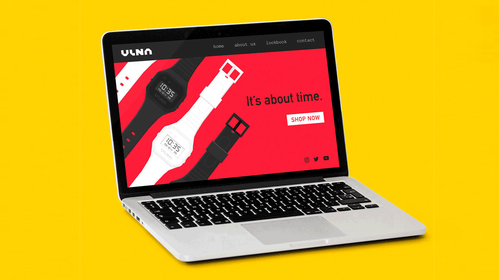
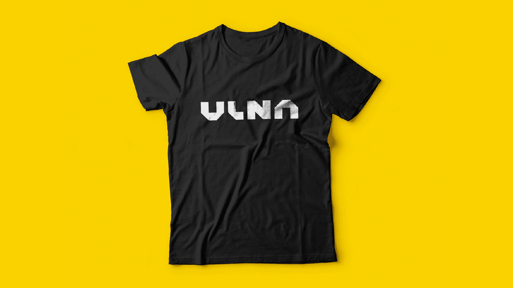

← Return to Homepage — ULNA

ULNA Wristwatches
ULNA is a fictional wristwatch brand I created for a Dribbble × Frontify contest back in 2019. The prompt was to create a faux brand and use Frontify to showcase the brand guidelines. My submission was named one of the winners of the contest and landed me a brand new Macbook Pro!
The brand was inspired by my love for minimalist, retro digital watches. To flesh out the brand, I created the logo, a watch concept, a website mockup, and chose brand colors and typography.




Dribbble Links
01. Contest Announcement ↗
02. Initial Dribbble Entry ↗
03. Follow Up Dribbble Post ↗
Frontify Links
01. Winners Announcement ↗
02. Frontify Interview ↗
03. ULNA Brand Hub ↗
Project Details
01. Created in 2019
02. Named after a bone
03. Won an award!